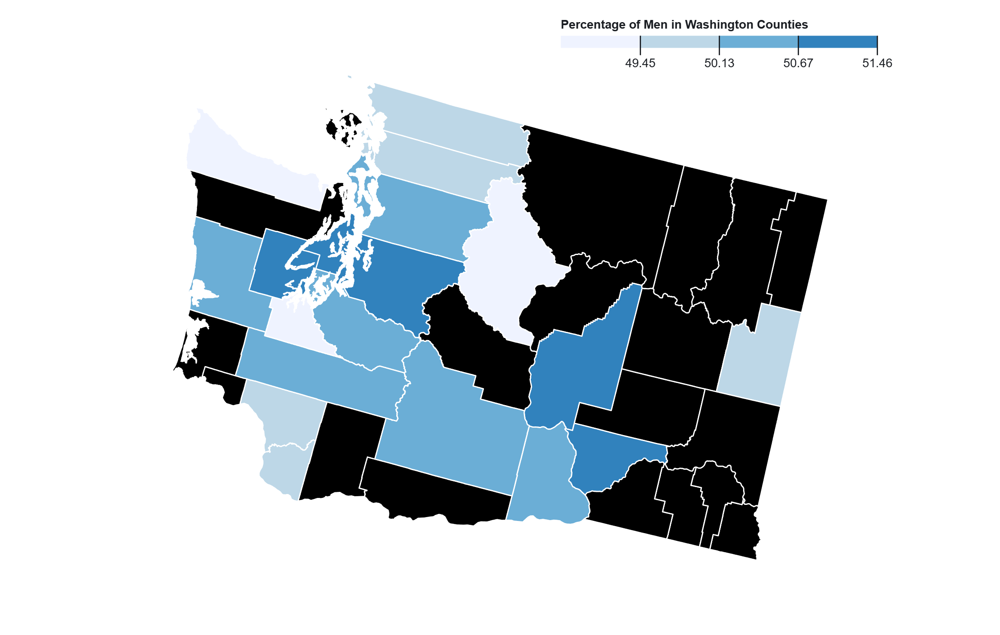
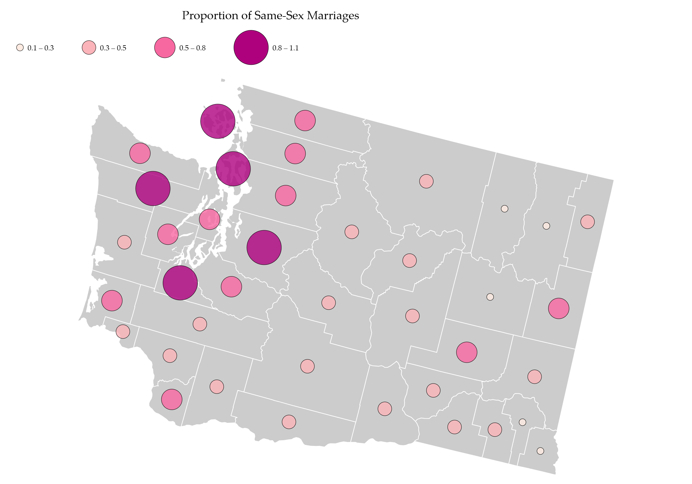
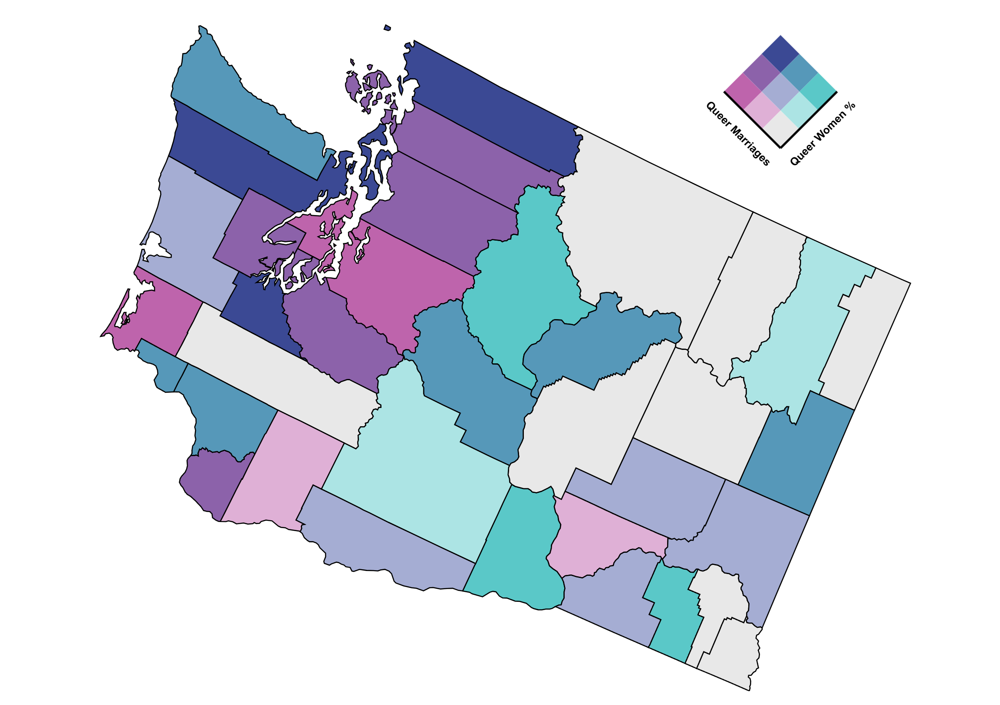
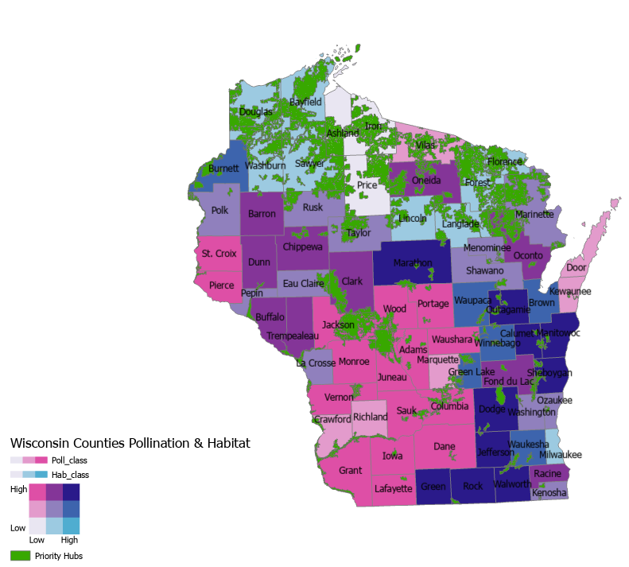
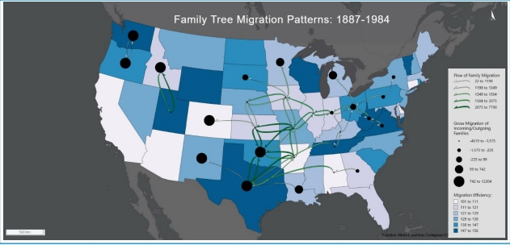

Geovisualization Portfolio GEOG:3540

Chloropleth Distribution of Men Per Washington County
This chloropleth map shows the distribution of each counties' percentage of men per each county in Washington 2020, in quantile classification.

Graduated mapping of Same Sex Female Couples
This graduated symbol map shows the distribution of same-sex married couples in Washington in 2020. This data is split up between each county in Washington. This map uses a quantile classification for data distribution.

Isarithmic Map
This isarithmic map is the yearly total precipitation in the state of Iowa. It clearly shows by the darkest color that Northeastern Iowa gets the most precipitation yearly and the southern and western most get the least.

Bivariate Map of Female Queer Marriages
This bivariate map compares the distribution of queer female couple to overall marriages in Washington derived from 2020 census data. This uses blue-pink color scheme and allows users to understand areas of potential safe spaces in Washington.

Priority Hubs for Pollination and Habitat Richness in Wisconsin
This project displays areas of high pollination compared to areas of habitat richness to understand how pollination and habitats are interconnected.

Migration of families 18887-1942
This flow map shows the migration of families between capital cities of select states between 1887-1942. Changes in numbers is indicated by colors and arrow size.